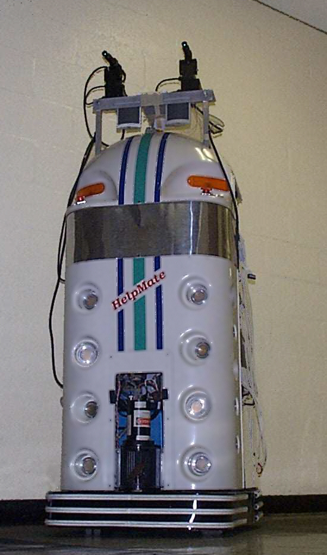
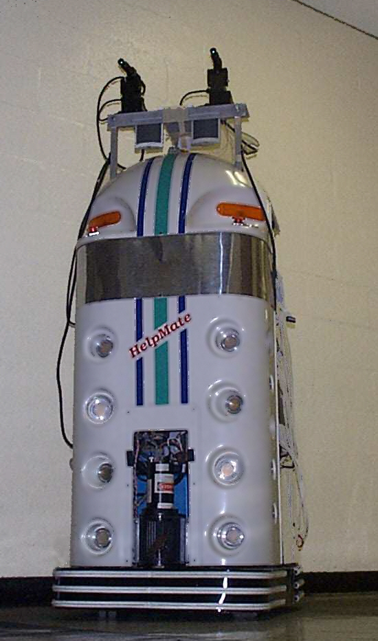
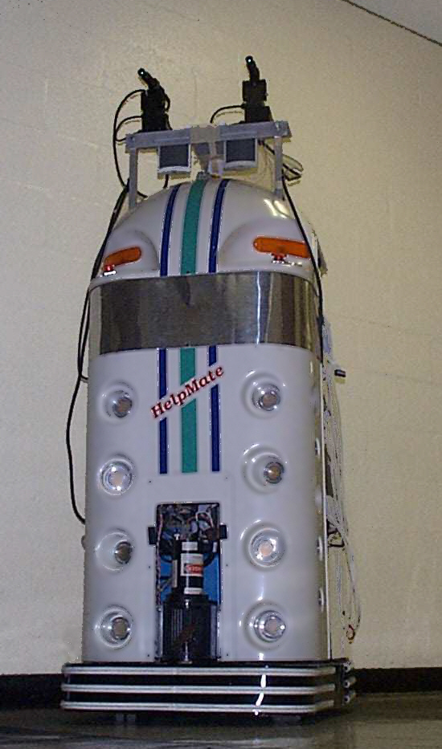

Methods (Cont.)
A service robotics benchmark
Test the IMA using robots ISAC and Helpmate.
 

| Conference | Systems, Man, and Cybernetics, 1997. |
|---|---|
| Date of Publication | 12-15 Oct 1997 |
| Team | Suzaku |
| Members | Guanxian.Lee(李冠贤), Zhanrui.Liang(梁展瑞) |
This paper is describing a system architecture to address the grand challenge.
Presents a computational architecture that addresses the grand challenge problem of system integration.
IMA - The Intelligent Machine Architecture
A set of organizing principles and core components that are used to build the basis for the system.
Be like their IMA.
IMA is agent-based. The term Agent is very popular at that time.
excel at applying knowledge, work by exchanging/manipulating knowledge
can have advantages from both knowledge-based and behavior-based system decomposition.
Test the IMA using robots ISAC and Helpmate.

IMA has agents as subsystems.
They don't finish yet(at that time). They used IMA to implement,
huh?